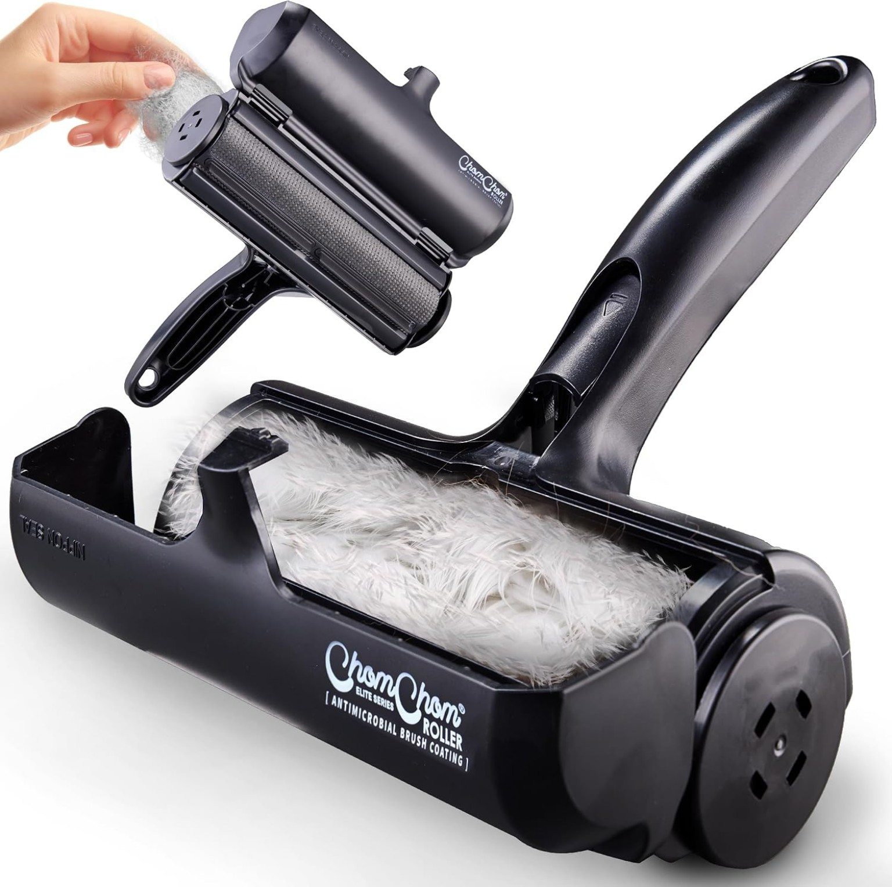
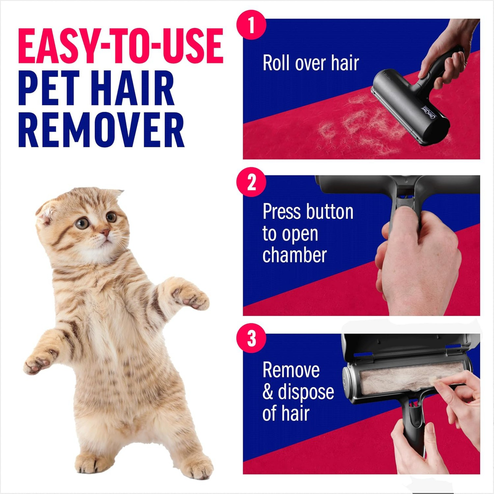
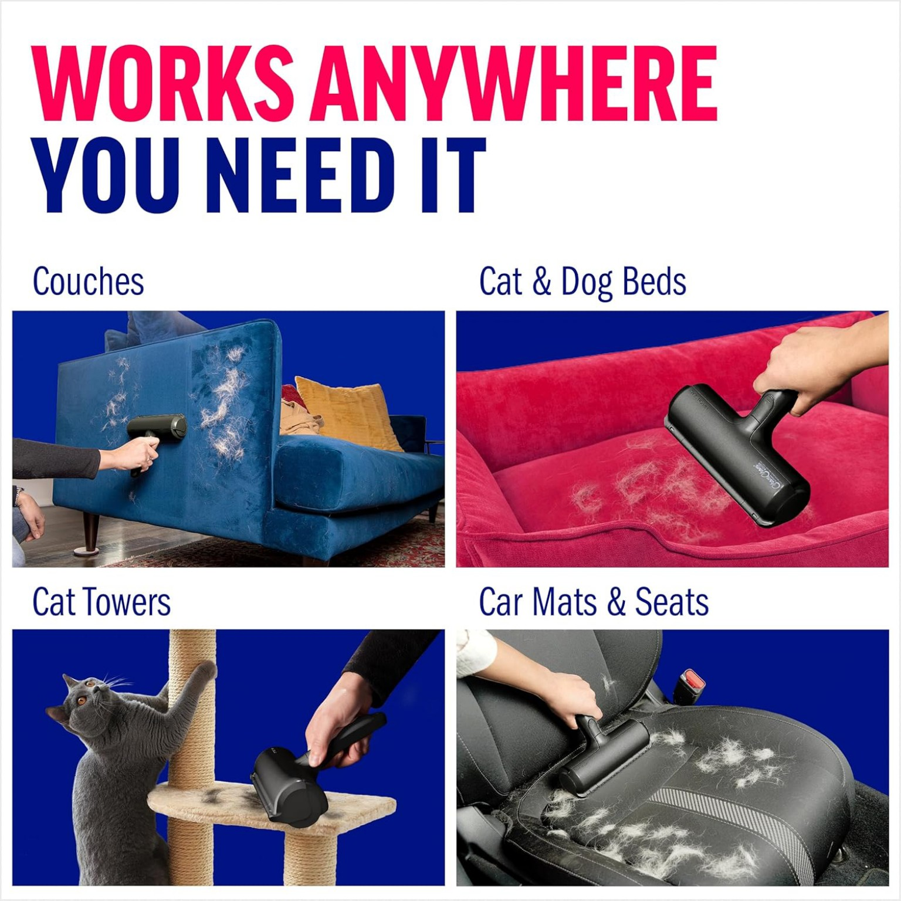
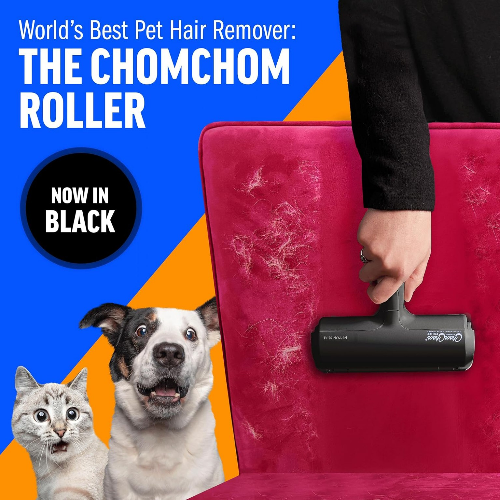
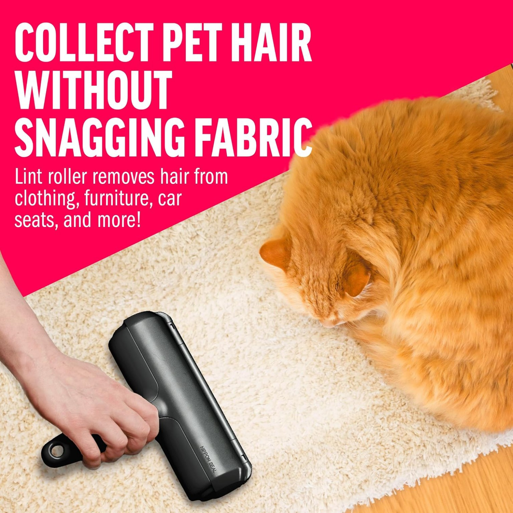
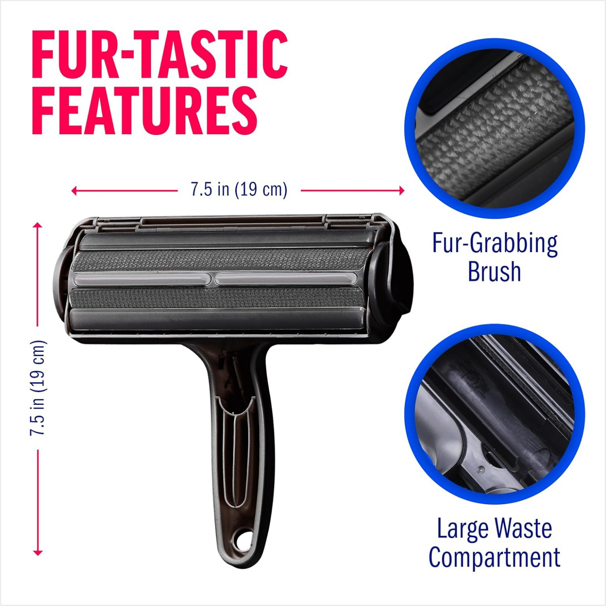

01
Reusable
Use it again and again without disposable adhesive sheets or replacement rolls.
Pick up pet hair from couches, beds, cat towers, carpets, car seats and more — without disposable sticky sheets or refill rolls.

A practical reusable roller designed to collect loose fur from everyday surfaces.
Use it again and again without disposable adhesive sheets or replacement rolls.
The textured cleaning surface helps gather loose pet hair from fabric surfaces.
Collected hair is stored inside the roller for quick emptying.
Roll across the surface, open the chamber, and remove the collected hair.
Made for furniture, pet beds, cat towers, carpets and vehicle seats.
A compact manual tool you can keep at home or take with you in the car.
One reusable roller for the surfaces you clean most.

Lift loose fur from upholstery and fabric furniture.

Keep favorite pet resting areas looking cleaner.

Collect fur from fabric and carpeted climbing areas.

Clean up loose hair after trips with your pets.
Three straightforward steps from hairy surface to cleaner finish.

Move the roller across the surface to collect loose pet hair.
Use the release button to open the collection chamber.
Empty the collected hair, then the roller is ready to use again.
Key details shown in the supplied product materials.
Make pet hair cleanup part of your everyday routine with a reusable roller.
Yes. It is designed as a reusable manual hair-removal tool, so there are no sticky sheets or refill rolls to replace.
The supplied product materials show use on couches, pet beds, cat towers, carpets and car seats.
Roll to collect hair, press the release button to open the chamber, then remove the collected hair and close it again.
No. The product is a manual roller.